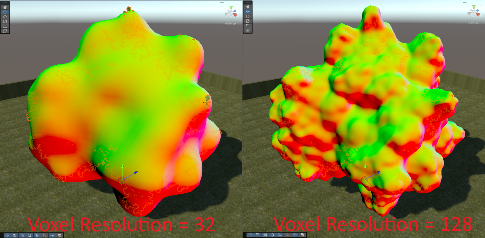
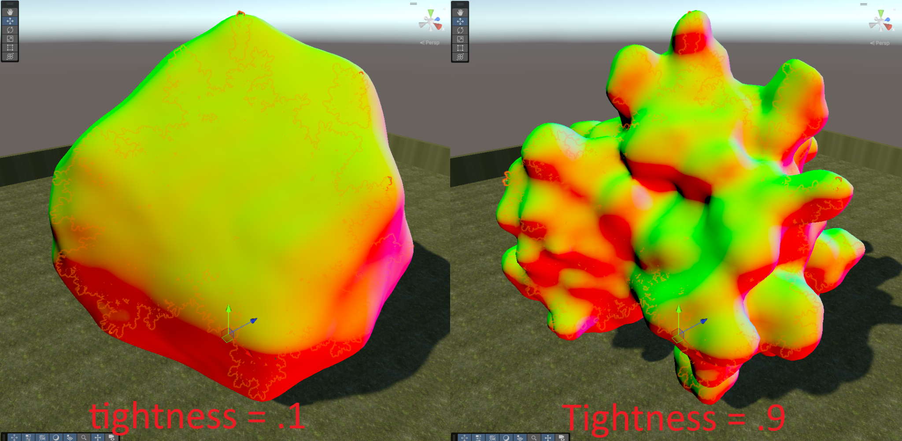
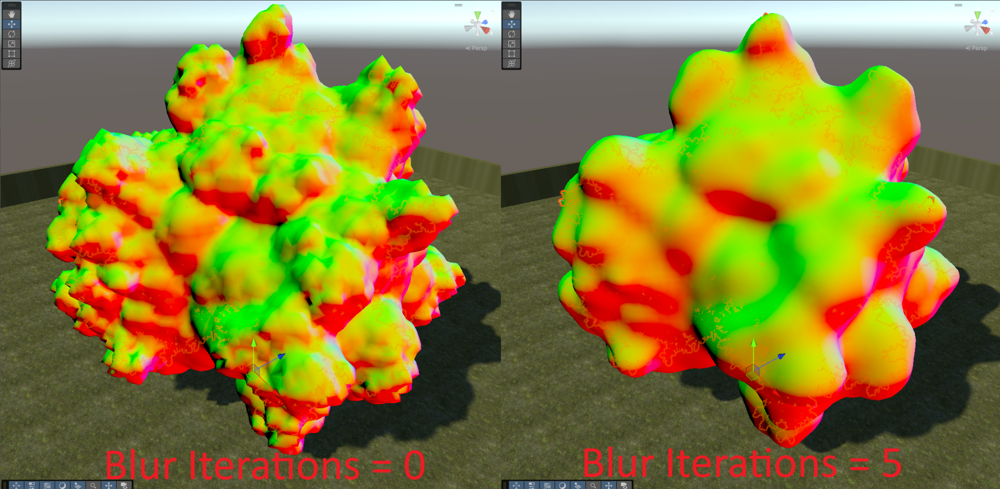

Proxy Mesh Generation
The first step in General Mode is generating the proxy mesh — a smooth shell that wraps around your foliage. Three main sliders control its shape. Configure them to your liking, then click Generate Proxy Mesh.
You can preview the result at any time with Show Proxy Mesh (click again to stop showing it). The proxy is displayed with a normals-visualizer material so you can judge how smooth the surface is.
SDF Resolution
Controls how much detail is retained when generating the proxy mesh. Higher resolution generally leads to a tighter proxy mesh with less padding around the foliage. Lower resolution produces a smoother, blobbier shell.
Range 8–256. Default 128.

Tightness
Controls how "tightly" the proxy mesh follows the source mesh. It interpolates between:
- 0 — a convex hull mesh (a smooth, blobby shape that ignores concavities).
- 1 — a surface-hugging mesh that closely follows the foliage's detail.
Range 0–1. Default 0.7.

Important
In some cases, if Tightness is close to 1 and the foliage has low density, the generated proxy mesh can develop undesired "air pockets" inside the model. Reduce Tightness until these are eliminated.
SDF Blur Iterations
Controls how many blur passes are applied to the SDF before the mesh is generated. Higher values produce a smoother output mesh and smoother normals, at the cost of slightly less retained detail.
Range 0–5. Default 5.

Advanced Options
Expand Advanced Options for post-processing controls. The defaults are good for almost all cases.
- Weld Vertices — Merges coincident vertices in the generated proxy mesh. On by default.
- Weld Epsilon — The distance threshold under which two vertices are considered the same and welded together.
Next
Once you're happy with the proxy mesh, move on to Normal Transfer & AO Bake →.